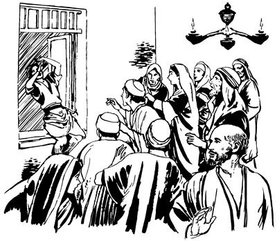

Paulus Makedonia agha Troas piogha (20:1-12)
20
1 As Efesus nimiri yanghang alamsieka aneko ta'ap seekpa, olog wameka Paulus elkabo Yesus yubu ka'ero ulamek nimi taneko yopsiogti, wana aingnibahiogti, “Na Makedonia so'oag punun,” aro ambatsiogti piog. 2 Makedonia inagha palamogti nimi tanekoag yubu maiknoro ambare-ambare wana aingni-aingni palamsiogti, Yunani so'oag piog. 3 Yunani so'oag piogti, wamogpa wal wilindi taogpa, “Mog so'o Siria mag alip toman punun,” sembaog. “Mag alip toman punun,” sembaog aghana, Yahudi nimiri, “Paulus obukap,” aro saekag lebekne sembe el taogti, “Mog so'o Makedonia inagha samoro punun,” sembaog. 4 “Punun,” sembaogti palamogpa, elap nhon palamek nangna: Pirus elme Sopater Bereangeap; Tesalonika nimi, nimi phende Aristarkhusap Sekundusap; Derbenge Gayusap; Listrange Timotiusap; Asia nimi, nimi phende Tikikusap Trofimusap; sin nangene Paulusap nhon palamek. 5 Paulusap elap nhon palameknang taneko a'ep taekti, sin samenag as Troas piekti, nun sembe tibogamsiekti, as Troas wamek.a 6 Allah omekto kwaneng roti walerop komne terop li tero liogha, mag alip toman as Filipi laplobi agha palamububa, ae inipna tombare taog. Ae inipna tombare taogpa, as Troas piburi, sin sam piekti, wameknangap haibtaburi, wamubu pahabog ik saek bare taog.7 Sae kaupto ua urop sumb taogpa, “Kwaneng roti khepto tukap,” aro winiptaburi, Paulusti nunkabo nunap nhon wamekne sinag, “Nu ambuhum pukap,” aro yubu maiknoro ambarelamsiog paghabog ae inipna tomnusam taog. 8 Ae tika alikinagne nu wamubuag aneko whea maikno tiniro ikik piek. 9 Paulus yubu kiliro-kiliro lelamog abeneko kabuni me nhon si Eutikus neneko keken phoro soro kuptopne ina siramag pukamogti, kabuni me eneko haing whi uro wamna koma kwhingdi tungum kanem alamogti, eba timbaog. Ae tika wilindipne nenekoag agha eba timbaogpa, nimiri salero kemelamekag agha ya'ag tebaog.

10 Ya'ag oroba wamogpa, Paulus poneko kulukaogti, kabuni tebaogha aneko somoro saelbamogti, nimi tanekoag, “Yubu maikno lero engkaheng kom. Me ane kamag wamla,” seog.
Eutikus ae tika wilindipneag agha eba timbaog. (ACT 20.10)
11 Wene seogti, Paulus nen samoro aeag tai waelbaogti, kwaneng khepto teekti, nen yubu lelamog paghabog ae kwelekaog. Kwelekaogpa Paulus neneko lambaogti palamog. 12 El palamogpa, nimi tanekori me kabuni aneko kamag wamogne elenge aeag pabiekti, sin ni wana aingniro awi yeng uro wamek.
Nu Paulusap Troas agha Miletus pibunge sembe na Lukasti mome toro palilamna (20:13-16)
13 “Pukap,” sembabuba, Paulustina, “A'un sam kabongag agha as Asos pimundi, wapmunag na yan toman agha ina toman yanun,” seogha sunsunum uro nu samenag kabongag mag alip toman agha as Asos piburi wamubu. 14 Wamububa, el nunap as Asos haiptaburi, kabongag Paulusap nhon waelbaburi, mag alip toman agha as Metilene pibu. 15 As Metilene mabubua lukunapne as enekoag agha mag alip tomanog palamuburi, mag longoro kanektop so'o Khios peramag piburi, inipnag nhon mamubu. Aneko mabubua kwelekaogne lukunap mag longoro kanektop mog so'o as Samos piburi, mabubua kwelekaogne as Miletus pibu. 16 Paulusti, “Nu anam Yerusalem pin komag agha Yahudi nimiri ik nubu sum Pentakosta uaikag,” sembaogne sembe “Mog so'o Asia ik maikno wamukap kom. As Efesus babe yan ingkan koma pukap,” aro karebaog.c
Paulusap Efesus nimi wenehiropnang wamek neap a'eptaeka sembe Lukasti mome toro pibog (20:17-38)
17 As Miletus pina wamuburi, Paulustina, “As Efesus Yesusag ‘Sikne’ aro seneragtop nimi sikidoyabo wenelamsiang nangd na as Miletus wamnaag yaukangba, enel phululom,” aro Miletus nimi pogsiog. 18 Enel phiekti yaekpa, Paulusti as Efesus nimi piamsiekti, wenehirop nangag yubu lelamogti,
“Nangkabo, samenag Asia so'o eneag yahiri, yana alnina alnilamsiri, ulamsiri, ulamnange a'un elwamlom. 19 Yahudi nimiri nanag yo palilamneekti, “Obukap,” aro saekag lero ulamneekpa, wana pailangkalamsiri engelamsiri, Nia Mangkina Salehiropne Yesus ponekori awe tolamsinge seklero tolamsi. 20 Undop aghana ta'ap sen koma, “El uro wamikpa, yepsilul,” sembahi tanena, yubu eneko a'unag ni ambarelamsisiri, ologha babe tognobahi kom. Tognoban koma yubu ni amolamsisinge nimi ni whingag agha ambatsisiri, a'ununge aeag poloro winil talamlumag babe ambatsisi. 21 Yahudi nimiap Yunani nimiap ambarelamsisiri, ‘Malia ulamlomne lipsimundi, Allahag wana seneraglapmundi, Nia Mangkina Saelbamsilne Yesusag “Sikne” aro seneraglamlulom,’ aro ambatsisi. 22 Yerusalem pineba, nanag uaukangne ekon wamnari wamna. Allah Eldamne Yame Walinge nenekori sae kiliro pabalamneleba punun. 23 Nanag uaukangne ekon wamna aghana, na as nhonag pang nhonag pang ulamnaba, Allah Eldamne Yame Walinge nenekori, ‘Nimiri haing sae kaupkikpa, seklebalulam,’ aro lag phoro ambarelamnel. 24 ‘Seklebalulam,’ aro ambarelamnel aghana, nari wana nong ene sembe seneraghal talamna kom. Nari seneraglamnangena, Nia Mangkina Saelbamsilne Yesusti awe na saeag pibogne sol wali, wali uro komopto tolamnun. Awe na saeag pibognena, ‘ “Allahri nimi lunuro opsin koma wana waliri nimi talulamsil,” aro yubu walinge Yesus sembe ambarelamsululam,’ aro na saeag pibog.
25 Wene aro na saeag pibogpa, as nhonag pang nhonag pang ulamnori, a'unag babe Allahri mog so'oag nimi saelbamsilne sembe ambarelamsino aghana, a'undi nari whing ene nen olog imnululom komne, na el wamna. 26-27 Ane sembe sumene ane yubu mikip uro a'unag lelamnangena, Allahri ‘Yubu ane ambatsululam,’ aro ambarelamneonge ta'ap sen koma a'unag tipto ni ambarelamsino. Ane sembe nimi nhondi nari yubu Yesus sembe ambatsinonge ka'ebaom kom tanena Allahri opsilea tam nanag nembaheng kom.
28-29 Na a'un laplobi agha pineba, pai kam yonge saog urop nimi yingkina saluro kilphaikagti, wali uro a'unkaboap a'un wenehirop nang a'undam nimi wanaapti haing whi uro yae wamsululom. Allah Eldamne Yame Walinge nenekori, ‘A'unkabo pham domba saog uro wamang nimi taneko yubu amohiro paiamsululom,’ aro sekitsio. Sekitsioba, pai kam yonge saog urop nimiri pham domba Allah Eldamne enengag agha toro topsio nimi taneko o'ona sembahin koma wea oro kilphaikagti, Yesusag ‘Sikne’ aro seneragtop nimi haing whi uro yae piamsululom. 30 A'un anabiag agha babe nimi sekelingkukang. Sekelingkikti, Allah yubu lero orolenange agha sikne nembukang. Orolenange agha sikne nembamikti, Yesus yubu ka'ero ulamang nimi wana tolamsikpa, sinag ‘Sikne,’ aro sare nelebahukang. 31 Orolenange agha sikne nembamikti, wana tolamsik nimi yaukangne sembe seneragto yae uptangkamlulom! Hengkun wilindi sinag kweleknag na olog ta'apsen koma nari wanaag agha engelamnoriog a'un ni ambarelamsinonge ekon taheng kom.
32 Wene, ‘Allahri a'un piamsilul,’ aro nari a'un Allah saeag nenelamsin. ‘Allahri opsin koma wana waliri talulamsil,’ aro Yesus yubu sembe ambarelamsinne salelapmunba, Allahri a'un mikip nenelamsileri, ‘Yesusag “Sikne” aro seneraglamik nimi taneko Na namabo,’ aro weplamsil nimi niag tatsilul. ‘Na mabo,’ senelamsildi, eldinge saeag agha tatsileba, ya'ag kamag wamukang.
33 Nari, ‘A'undi saeagha leng-leng aroba emasto, perakto, enektop agto a'undi na tatneheng,’ aro wanaag seneraglamno kom. 34 Nanap nangkabo nhon wamubungeap teko nunag wamogne sembe nadamne saeag agha kamna kapto tolamsinge a'un elwamlom.e 35 Nari ulamnonge ‘Sindi babe imniikti, ulamukang,’ aro sunumna ulamno. Nia mangkina ulamnongena, ‘Sol wali, wali uro welapmundi, nimi mikip komne yeplamsululom,’ aro ulamnoba, imneom.
Nia ni ulamnonge aneko, Yesusti yubu ambarelamsiogne seneragi agha ulamno. Nia Mangkina Salehiropne Yesusti ambarelamsiogti, ‘Nimiri a'unag tatsiikne olog wali sembamlom aghana, nimiag tatsululomne sembe “Wali sirik,” alamna,’ aro ambatsiog. Yesusti ambarelamsiogne seneragi agha nia mangkina a'un anabi agha ulamno,” aro Paulusti ambatsiog.
36 Ni ane Paulus nenekori ambatsiogti, yabu sanukto pulingkina sin Allahag molona molbaek. 37 Allahag molona lero molbaekti, sindi Paulus somoro togtog aro kiplamekti, “Wali pululam,” aro maiknoro engkarek. 38 Paulusti, “Nen amik whing imnululom kom,” seogne sembe, “Nen haiptaukap kom,” aro wana sapsiogpa, “Mag alip toman pulul,” aro kabong wamoghag mag abolag pil piek.